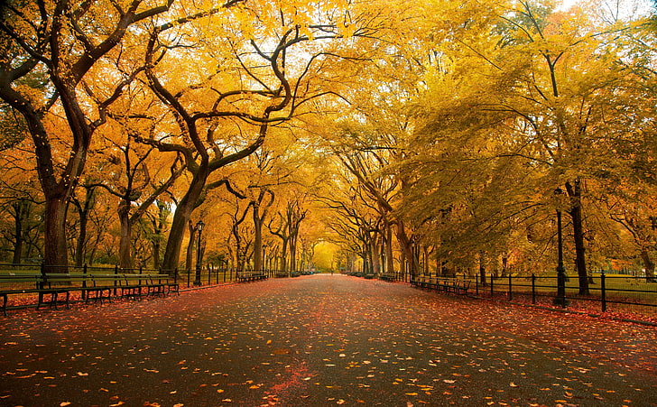
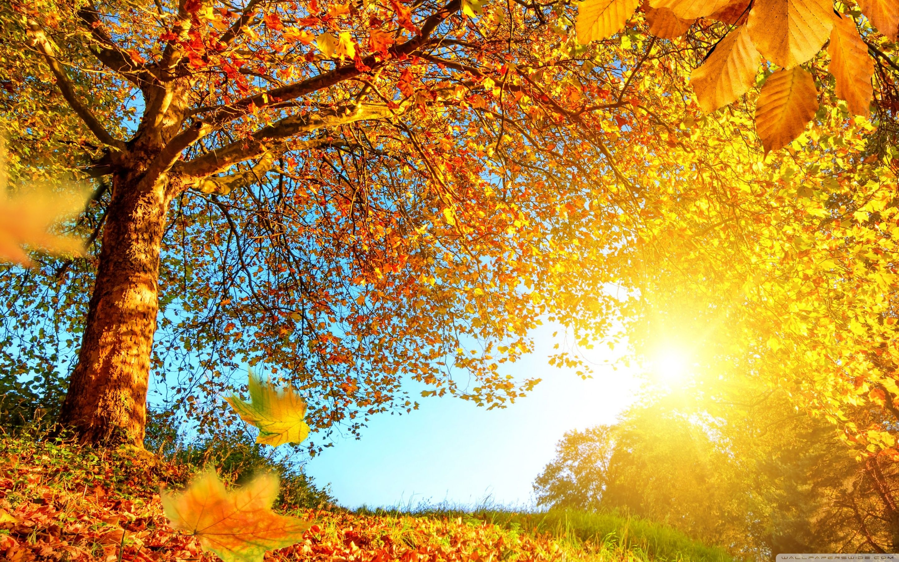
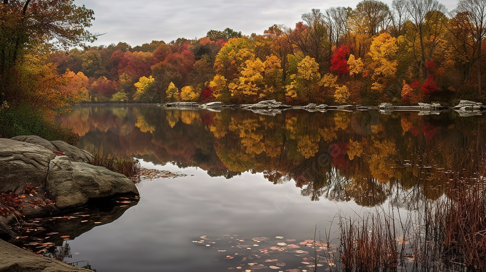

Change! It's everywhere and starting soon, with the Sun lowering much faster and the leaves turning orange and crisp on the paths you all walk on. Even if it's messy and the coming rains creates messes, nothing beats walks along orange and yellow colored pathes in the early afternoon setting or the late morning rising Sun.
Relaxation will bring nothing but appreciation for many aspects of the fall.

There's also the escape from the harsh New York Summers into the fresh air of the coming season. You'll always feel refreshed from feeling a good gust of wind coming your way after months of record breaking heat at long last.
Not to mention the food and treats that are available at both home and outside! From hot honey nuts from street venders to roasted turkey once Thanksgiving comes, and from the discounted candies of Halloween to the pumpkin pies and spiced drinks, there's something for everyone to enjoy once the cold comes settling in.

Finally, there's other nice sights during the Fall, such as the incredible views in Central Park when you look over their mini-lakes, or even the the complexity of clouds from the cold crisp air.
There's always something nice to appreciate with the coming season. Despite it getting sometimes unbearably cold, it ultimately brings us the holidays and the comfortable warmth after the short day ends.
(Just uh ignore the watermark on the image here)